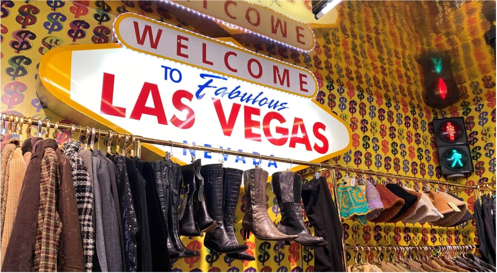
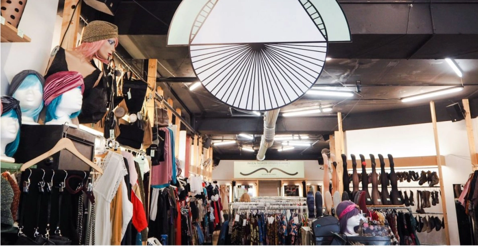
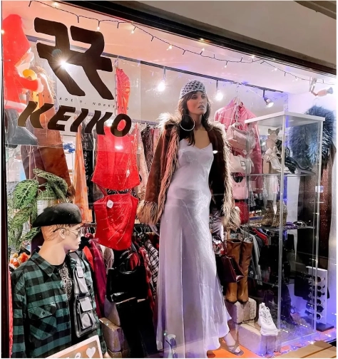
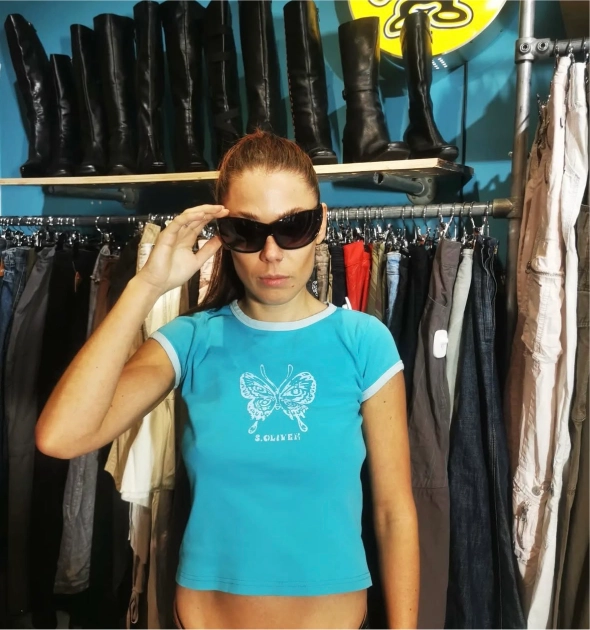
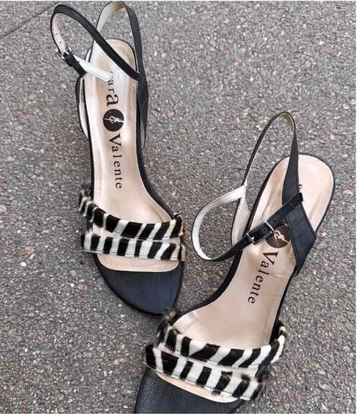
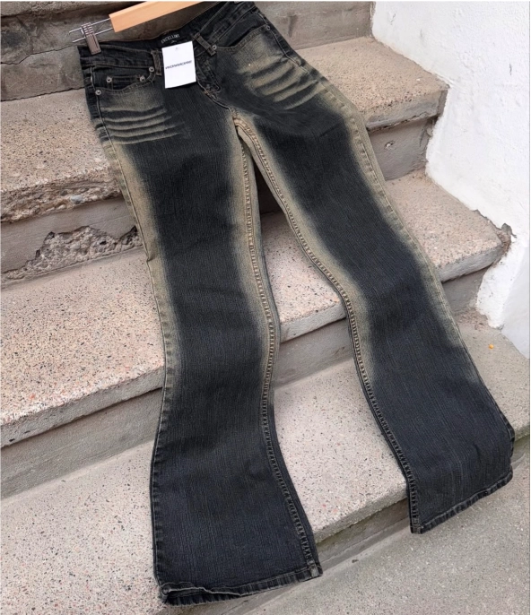
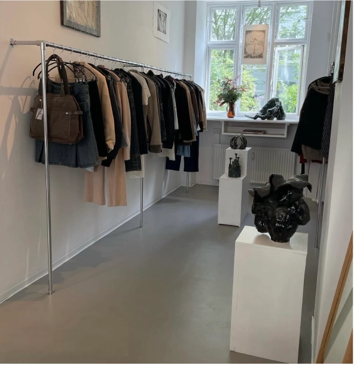
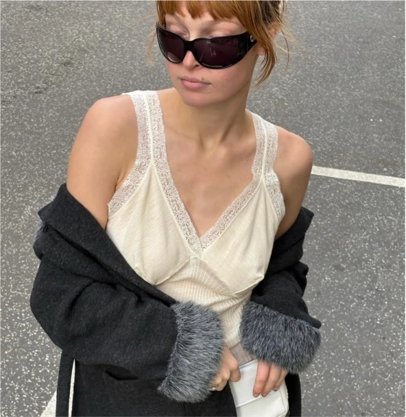

VINTAGE KØBENHAVN
Crush

Crush er en butik inspireret af LA universets farver og lys. De har et stort udvalg af tøj, tasker og sko fra hele verden.
Adresse: Nørrebrogade 5, 2200 København
Prag

Prag har flere butikker i København og er kendt for deres farverige vintagetøj. Her er der alt fra klassisk Y2K til retro.
Adresser der passer til bydelsguide:
Nørrebrogade 45, 2200 København
Vesterbrogade 98A, 1620 Vesterbro
Vesterbrogade 10, 1456 Indre By
Keiko


Keiko har håndplukket vintage og brugt tøj, beliggende på Nørrebro i København. Unikke stykker og accessories fra hele verden.
Adresse: Nørrebrogade 32D, 2200 København
Wonmore


Wonmore er en lille butik på Vesterbro der har et godt udvalg af tøj gennem sin Y2K-inspirerede stil.
Adresse: Vesterbrogade 20L, 4. th, 1620 København V
Szoba


Denne butik sælger håndplukket vintage items fra hele Europa. Stilen er inspireret af modens tendenser og kan især beskrives som cool stil.
Adresse: Saxogade 77, 1662 København V